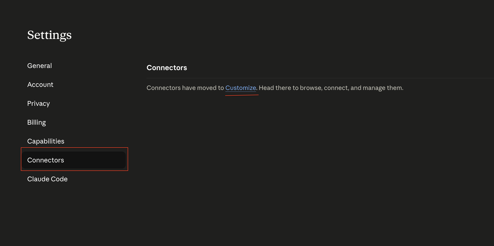
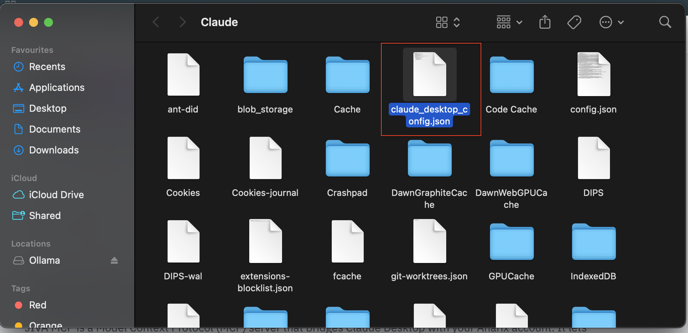
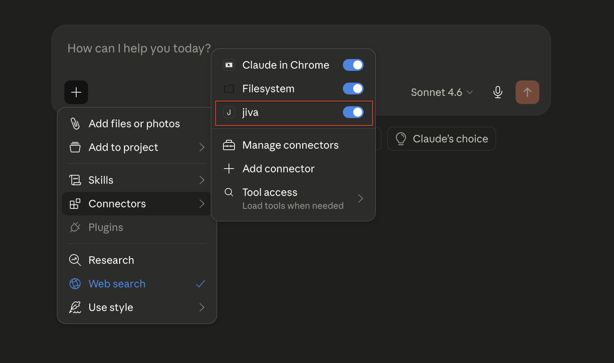
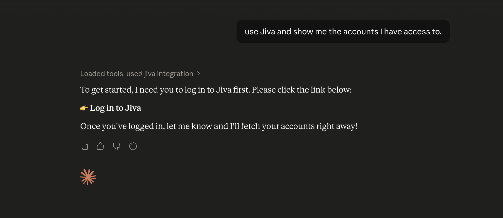

Anarix MCP
Connect Claude Desktop to your Anarix advertising and marketplace data. Ask natural-language questions and get instant performance insights.
What is Anarix MCP?
Anarix MCP is a Model Context Protocol (MCP) server that bridges Claude Desktop with your Anarix account. It lets you query advertising and marketplace data conversationally — simply describe what you want to know and Anarix MCP fetches the relevant data, runs analysis, and returns results directly inside Claude.
Anarix MCP is built for real operational analysis. It connects to live account data, not a static dataset — so every response reflects current performance.
Prerequisites
Before setting up Anarix MCP, make sure you have the following:
| Requirement | Details | Status Check |
|---|---|---|
| Claude Desktop | The desktop app for macOS or Windows. Not the web version. | Download → |
| Anarix Account | You need valid login credentials for the Anarix environment. | Contact your admin |
| Node.js | Required: Node.js 18 or newer so npx is available for launching the Anarix MCP connection. |
Download → |
Installation & Setup
Setting up Anarix MCP takes about 5 minutes. The flow below follows the same pattern most MCP desktop integrations use: install Claude Desktop, make sure Node is available, then replace the config cleanly.
If you haven't already, download Claude Desktop from claude.ai/download and install it on your machine.
Anarix MCP works with Claude Desktop only — it is not available in the Claude web browser interface.
Install Node.js 18+ locally so npx is available for the Anarix MCP command.
Download Node.js from nodejs.org and install the current LTS version. After installation, open Terminal or Command Prompt and verify:
node --version
npx --versionIf node or npx is not recognized, close and reopen Terminal or Command Prompt after installation, then run the version checks again.
In Claude Desktop:
- Click the menu icon or go to Settings
- Open the Developers tab
- Click Edit Config
You will see the claude_desktop_config.json file. Double-click it to open it.


Select all existing content in the config file and replace it with the following:
{
"mcpServers": {
"jiva": {
"command": "npx",
"args": [
"-y",
"mcp-remote",
"https://mcp.anarix.ai/mcp/sse",
"--allow-http"
]
}
},
"preferences": {
"coworkScheduledTasksEnabled": false,
"ccdScheduledTasksEnabled": false,
"sidebarMode": "chat",
"coworkWebSearchEnabled": true
}
}Replace the entire existing content of the config file. If there is already an mcpServers key, merge carefully — duplicate keys will cause JSON parse errors and Claude will fail to start.
Save the config file, then fully quit Claude Desktop — don't just close the window. Re-open it after it has fully exited.
On macOS, right-click the Claude icon in the Dock and choose Quit. On Windows, right-click the system tray icon and quit.
After reopening Claude Desktop:
- Open a new chat
- Look for the tools / connectors icon (hammer icon or plug icon)
- Confirm jiva appears in the list

Restart Claude Desktop a second time. On some machines, the first restart doesn't fully initialize the MCP connection.
Authentication Flow
Anarix MCP uses a secure browser-based login flow. You'll only need to do this once per session (or when your session expires).
Start a new chat and type any Anarix MCP-related query, such as:

Anarix MCP will detect that you are not authenticated and generate a login URL.
Click the URL provided by Anarix MCP. It will open a browser window where you can sign in with your Anarix credentials.
Enter your Anarix username and password and complete the sign-in. Return to Claude Desktop immediately after.
The login link is time-limited. Complete the browser sign-in promptly and return to Claude to avoid session expiry.
Anarix MCP will confirm authentication and list the accounts available to you. You're now ready to start querying.
Re-authentication
You may need to log in again when:
- Starting a new Claude Desktop session after a long gap
- Your session token has expired
- You switch accounts or clear local data
Simply trigger a new login query and repeat the flow above.
Your First Test
Once authenticated, start with these prompts to confirm everything is working:
Step 1 — Check account access
Step 2 — Run a performance query
Step 3 — Request a visualization
You're fully set up. Anarix MCP is connected, authenticated, and pulling live data from your Anarix account.
Troubleshooting
If Anarix MCP does not appear or authenticate correctly, use the checks below before escalating to your Anarix admin.
- Make sure the JSON is valid and has no trailing commas.
- Confirm
mcpServersappears only once. - Confirm the MCP URL is exactly
https://mcp.anarix.ai/mcp/sse. - If you already had other MCP servers configured, merge carefully instead of duplicating keys.
- Fully quit Claude Desktop and reopen it.
- Restart a second time if needed. Some machines do not initialize MCP on the first restart.
- Double-check that you edited the correct
claude_desktop_config.jsonfile. - Verify that Node.js is installed locally and that
npx --versionruns successfully.
- Install the latest Node.js LTS release from nodejs.org.
- Close and reopen Terminal or Command Prompt after installation.
- Verify with
node --versionandnpx --version. - If the commands still fail, reinstall Node.js and make sure the installer adds it to your system PATH.
- Trigger a fresh Anarix MCP query to generate a new login URL.
- Complete the browser login immediately after opening the link.
- You may need to sign in again after a long gap, after clearing local data, or when the session token expires.
- Ask Anarix MCP: "Show me the accounts I have access to."
- Anarix MCP only exposes accounts your Anarix credentials are authorized to access.
- If an expected account is missing, contact your Anarix admin to confirm permissions.
No. Anarix MCP is currently designed for Claude Desktop on macOS and Windows, not the Claude web interface or mobile apps.
Anarix MCP Documentation · Anarix Platform · Questions? Contact your Anarix account manager.